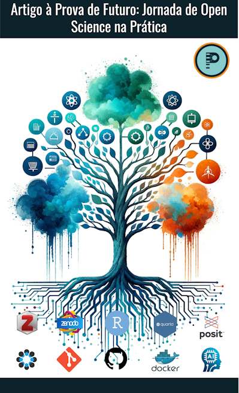

Artigo à Prova de Futuro
Jornada de Open Science na Prática
Home 🏢

Página do curso “Artigo à Prova de Futuro: Jornada de Open Science na Prática”. Aqui você encontrará informações sobre o programa do curso, materiais para seu acompanhamento e sugestões de leituras sobre a prática da ciência aberta (artigos, notas de aulas, blogs, vídeos, etc.).
Caso você caiu nessa página por acaso (🤣😁😉), saiba que o poderá se inscrever no curso aqui: independente se ele estiver acontecendo no momento, será convidado a participar da próxima versão.
Sobre os instrutores
O curso é coordenado e ministrado por Pablo Rogers, doutor em administração pela Universidade de São Paulo (FEA/USP) e professor de finanças e métodos quantitativos desde 2005. Em sua página de perfil do Github temos informações de seus trabalhos recentes, e no seu site pessoal, detalhes sobre suas formações, competências, trajetória e projetos.
Na sua versão atual o curso também será ministrado por Ricardo Limongi, doutor em administração pela Fundação Getúlio Vargas (FGV-SP) e professor de marketing e métodos quantitativos desde 2008 e atual editor chefe da Brazilian Administration Review (BAR). Em seu perfil do Instagram é possível acompanhar sua agenda de atividades, cursos e palestras sobre inteligência artificial aplicada aos negócios e pesquisa. Em seu canal do YouTube, é possível encontrar vídeos das suas atividades: congressos, palestras, aulas, etc.
Sobre o curso
O curso tem objetivo de introduzir os conceitos relacionados com a ciência aberta e a prática da pesquisa reprodutível. O curso aborda temas introdutórios sobre ciência aberta, com foco no ferramental disponível para tornar a pesquisa mais transparente, reprodutível e acessível. O curso é voltado para pesquisadores e estudantes de pós-graduação, mas aberto a qualquer pessoa interessada em aprender sobre a prática da ciência aberta. O protagonista do curso é o pesquisador brasileiro que deseja aprimorar a qualidade e a transparência de sua pesquisa, e que busca ferramentas para tornar-lá mais eficiente e acessível.
Trata-se de um curso intermitente programado para acontecer em 4 encontros de 4 horas/aula (ou 8 encontros de 2 horas/aula), totalizando 16 horas/aula. Num primeiro momento, a ideia que o curso seja remoto e síncrono para alcançar um número maior de interessados. Ele poderá acontecer mais de uma vez no ano, com datas e horários a serem definidos. Para o calendário atual do curso, consulte a seção Agenda.
O curso é gratuito e com de certificado de extensão pela Universidade Federal de Uberlândia (UFU). As inscrições são feitas por meio de um formulário intermediado pelo projeto Psico&Econo_METRIA. Quando da previsão das datas, uma campanha de e-mail marketing divulgará o link para a inscrição através de coordenações de pós-graduações selecionadas.
As vagas são limitadas e a seleção será feita por ordem de inscrição. Após o preenchimento das vagas, os demais interessados serão inscritos automaticamente numa lista de espera e, tempestivamente, serão avisados sobre a próxima edição do curso. Após selecionados, os inscritos receberão um e-mail com instruções para acesso à plataforma de aulas síncronas e para a realização das atividades prévias ao curso.
Ementa do curso
Introdução da Ciência Aberta / Repositórios da Ciência Aberta / Gerenciamento de Referências e Bibliotecas / Gestão de Dados e Projetos / Controle de Versão / Documentos Reprodutíveis / Controle de Ambiente (containers) / IA Aplicada à Pesquisa Científica.
Metodologia
Num primeiro momento, o curso foi concebido para acontecer de forma remota e síncrona, com aulas expositivas e teóricas, porém em grande medida, o conteúdo é essencialmente prático. Algumas aulas poderão ser gravadas e disponibilizadas no canal do YouTube do projeto Psico&Econo_METRIA, mas a intenção é que o conteúdo principal seja síncrono, para uma maior interação entre os participantes.
Nesse sentido, o material do curso organizado nessa página refere-se ao roteiro estruturado de tudo que se vê nas aulas síncronas e conteúdos adicionais (bibliografia, notas de aulas, links, etc).
Artigo à Prova de Futuro: Jornada de Open Science na Prática by Pablo Rogers is licensed under CC BY-NC-SA 4.0